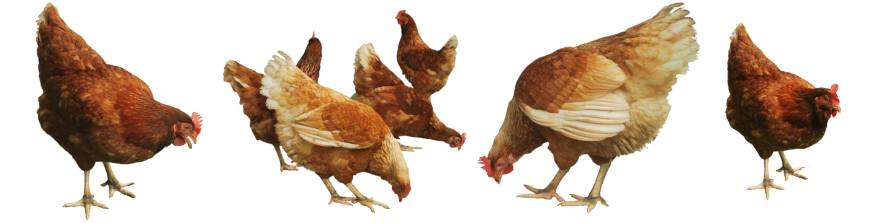

Prepare-se para bicar o que há de mais quente no universo das penas! Neste site, foi-se reunido tudo o que você precisa saber sobre o fascinante e, muitas vezes, hilário mundo das galinhas. Desde os segredos mais escandalosos do galinheiro até as histórias de penas e ciscos que fazem todos piar de curiosidade, temos de tudo para manter você bem informado e entretido.
